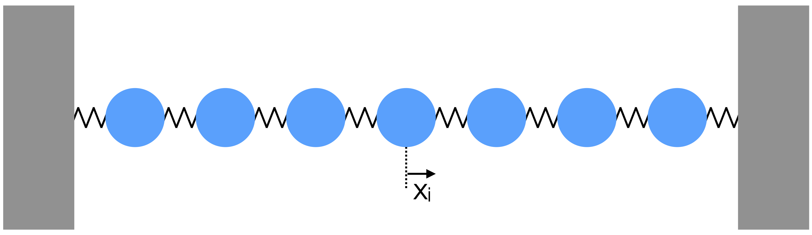

A square NxN matrix \(A\), has eigenvector \(u\) and eigenvalue \(\lambda\) that satisfy :
\[(A - \lambda I)u = 0 \tag{10.1}\]
Solving eigenproblems is closely related to finding the roots of polynomials. You may be familiar with one method for finding eigenvalues, which is to find the roots of the N-th degree polynomial found by expanding :
\[p(t) = \det{|A - t I|} = 0 \tag{10.2}\]
Many eigenproblem solving routines are provided by SciPy. In particular, scipy.linalg.eig(A) will return a tuple containing the eigenvalues and eigenvectors of A. If only the eigenvalues are required, scipy.linalg.eigenvals(A) can be used.
Care should be taken when using scipy.linalg.eig, since it will find “left” and “right” eigenvectors, as specified, which are the solutions to \(v A = \lambda v\) and \(A v = \lambda v\) respectively.
with numerical values given to 3 decimal places on the RHS.
import numpy as npimport scipy.linalg as linalgm = np.array([[-2,-4,2],[-2,1,2],[4,2,5]])# set seed for repeatabilitynp.random.seed(2)# run the algorithmmus, vs = linalg.eig(m)# print resultsnp.set_printoptions(precision=3)for i inrange(3):print("Eigenvalue/vector : {:.1f}{}".format(mus[i], vs.T[i]))
Note that we have transposed the array of eigenvectors returned by linalg.eig(). This is a feature of the function, as described in the reference manual : “The normalized left eigenvector corresponding to the eigenvalue w[i] is the column vl[:,i]”.
10.2 Physics Example
In this section, we illustrate the use of eigenvalue solvers in finding stable solutions of the coupled system of oscillators shown below.

Figure 2 - Coupled oscillators, masses on springs.
If the displacement of the \(i\)th mass from its equilibrium position is denoted as \(x_i\), the force on the mass is given by the tension in the two springs as :
We can assume that there are normal mode solutions, i.e. solutions of the form \(x_i = z_i e^{i\omega t}\) in which all masses oscillate with the same frequency \(\omega\) but with unknown phasors \(z_i\). Then the above equation becomes :
This example is a typical eigenvalue problem, in that many of the matrix elements are zero, which can greatly simplify the computational challenge and make even large systems solvable. The matrix is symmetric, which means it is suitable for solving with our eigenproblem solving function above, or one of the solvers from scipy.linalg.
The eigenvalue associated with each mode gives the frequency, while the (complex) eigenvector provides the magnitude and phase of oscillation for each mass. We can plot the displacement of each mass as a function of time for each mode.
import numpy as npimport scipy.linalg as linalgimport matplotlib.pyplot as plt# a function to calculate the (real) displacement from complex phasedef disp(zi, omega, t):return np.real(zi * np.exp(1j* omega * t))# set up some pretty colours for plottingcm = plt.cm.viridiscol = [cm(int(x*cm.N/7)) for x inrange(7)]# time periodts = np.arange(0,40, 0.001)# loop over eigenmodesfor i inrange(7):print("Mode : ",i)print("Eigenvalue : ", mus[i]) fig=plt.figure(figsize=(16, 4)) xs = []# loop over massesfor j inrange(7):# get the displacement, and add an offset to separate out each line offset = (2*j)-6# create displacement values from function using eigenvectors and eigenvalues xs = disp(vs.T[i][j], mus[i], ts) + offset# plot displacement plt.plot(ts, xs, color=col[j])# plot central position to guide the eye plt.plot([0, 40], [offset, offset], color=col[j], linestyle='dotted') plt.xlabel("t") plt.show()